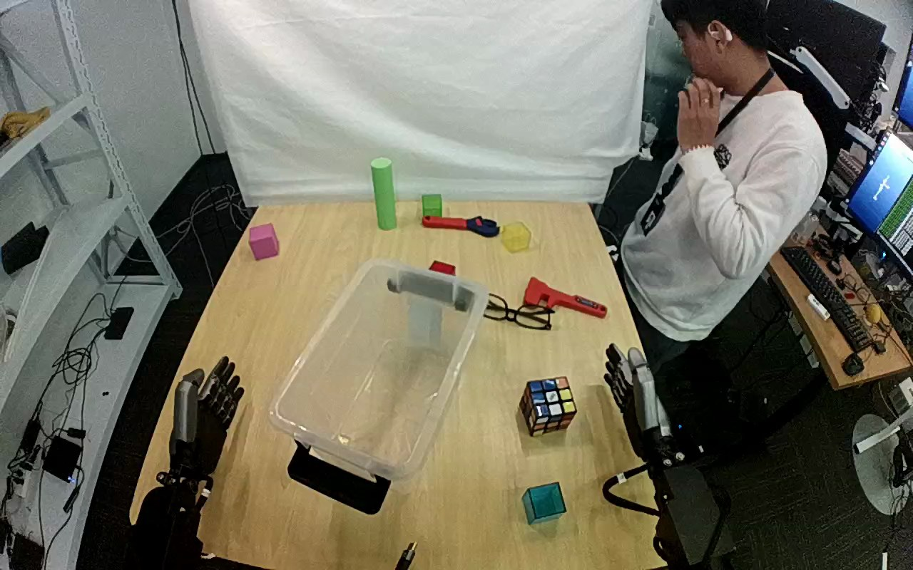

ActionNet · 01JMC54RMAVQ5E7IKP
01jmc54rmavq5e7ikp

Annotation
From the dedicated visual review of this video (humanoid_action_v1). Plain text · JSON
Observed outcome
- Status
successful_visible_placement
- Description
The Rubik's cube is released inside the transparent container and remains resting on its floor while the hand withdraws.
- Selected action outcome
successful_visible_placement
- Source overall success label
not used to infer outcome
Hand roles
- Lower right visible arm
Sole manipulating hand: approaches the cube, closes thumb and fingers around opposing sides of it, bears it during lift and transport, lowers it into the container, opens, and withdraws to the right edge.
- Lower left visible arm
Stays stationary beside the table on image left for the whole clip; no contact with the cube, container or any object.
Coordination
Single-hand object placement. No hand-to-hand transfer or bimanual stabilization. A person standing at the image right (hand raised to chin) does not interact with the robot or objects.
Robot-side evidence
- Active arm
hand entering from the lower-right edge of the initial image
- Initial frame evidence
Two arms rise from the near lower image edges: a dark five-finger hand on the lower left and a dark arm with a gray hand on the lower right. Only the right-edge arm moves during the clip. Torso and shoulders are outside the image, so the camera's pose relative to the robot body is not independently established; if the camera looks forward from behind the robot's head the active arm would be the robot's right, but this is not verified.
- Confidence
Visible-arm identity is unambiguous; anatomical left/right is not independently established.
Chronology
| Frames | Observation |
|---|---|
| 0–40 | Cube lies on the table right of the transparent container; both robot hands are clear and still. The standing person at upper right is static. |
| 42–104 | The right-edge arm advances toward the cube with fingers open. By about frame 70 the hand is beside the cube with the thumb on its lower/right side and fingers above; frame 104 still shows a small gap. |
| 106–160 | Thumb and fingers close around opposing sides of the cube (frame 110 hand surrounding the cube, frame 150 cube enclosed between thumb-side and finger-side surfaces). Small cube shifts during closure; no second-hand contact or regrasp. |
| 162–214 | The hand raises the cube clear of the table (frame 180 slightly lifted, frame 190 clearly suspended), maintaining the same grasp and bearing its weight. Cube rotates somewhat in the hand during lift. |
| 216–296 | The arm carries the held cube up and to the left across the back of the table (frame 224 at right edge, frame 248 higher, frame 272 near the container's right rim, frame 296 above the container) while the wrist turns. |
| 298–320 | The held cube is positioned over the container and lowered inside (frame 316 and 318 held above the container floor, frame 320 lower and tilted still in the hand). |
| 321–328 | Fingers open; by frame 322 the cube is free in the container bottom and by frame 328 it rests tilted on its bottom with the hand open above it. Exact release frame is between 318 and 322. |
| 329–428 | The hand lifts clear and withdraws to the right/upper-right (frame 380 only fingers at the right edge; frame 428 hand out of view). Cube remains in the container, with no further manipulation. |
Differences from the publisher annotation
- Source says transparent container; observed target is a clear plastic storage tub, consistent with the source. No substantive discrepancy in object, target or step order.
- Source annotation does not specify a hand side; the prompt uses the visible lower-right-edge hand.
Uncertainties
- Torso and shoulder attachment are outside the image and camera pose or mirroring is not independently established; anatomical left/right is uncertain, so the prompt uses the unambiguous hand entering from the lower-right edge.
- Exact finger-closure and first table-separation frames are bracketed by the sampled frames; the release frame lies between 318 and 322, and the cube drops a short distance into the container.
- Contact with individual finger links cannot be resolved at this resolution; the grasp is described as thumb and fingers on opposing sides.
- The top camera shows slight source-view motion; the required fixed-camera constraint is retained verbatim.
Complete review record action_review.json
{
"dataset": "ActionNet",
"episode_id": "01JMC54RMAVQ5E7IKP",
"prompt_protocol": "humanoid_action_v1",
"prompt_provenance": "visually_authored_from_video_and_initial_frame",
"review_scope": "One dedicated agent reviewed the complete unchanged 429-frame top/rgb.mp4 and the generation first frame. Full single-task sequence retained.",
"source_video": "../../original/top/rgb.mp4",
"conditioning_first_frame": "../first_frame.png",
"generation_video": "../../original/top/rgb.mp4",
"action_prompt": "../actiongeneration_prompt.txt",
"source_frame_start": 0,
"source_frame_end_exclusive": 429,
"fps_rational": "30/1",
"resolution": [
1280,
800
],
"source_annotation": {
"verbatim_task_prompt": "Pick up the Rubiks cube and place it into the transparent container.",
"task_prompt_path": "../../original/task_prompt.txt"
},
"anatomical_side_evidence": {
"active_arm": "hand entering from the lower-right edge of the initial image",
"initial_frame_evidence": "Two arms rise from the near lower image edges: a dark five-finger hand on the lower left and a dark arm with a gray hand on the lower right. Only the right-edge arm moves during the clip. Torso and shoulders are outside the image, so the camera's pose relative to the robot body is not independently established; if the camera looks forward from behind the robot's head the active arm would be the robot's right, but this is not verified.",
"confidence": "Visible-arm identity is unambiguous; anatomical left/right is not independently established."
},
"arm_roles": {
"lower_right_visible_arm": "Sole manipulating hand: approaches the cube, closes thumb and fingers around opposing sides of it, bears it during lift and transport, lowers it into the container, opens, and withdraws to the right edge.",
"lower_left_visible_arm": "Stays stationary beside the table on image left for the whole clip; no contact with the cube, container or any object."
},
"coordination": "Single-hand object placement. No hand-to-hand transfer or bimanual stabilization. A person standing at the image right (hand raised to chin) does not interact with the robot or objects.",
"chronology": [
{
"frames": [
0,
40
],
"observation": "Cube lies on the table right of the transparent container; both robot hands are clear and still. The standing person at upper right is static."
},
{
"frames": [
42,
104
],
"observation": "The right-edge arm advances toward the cube with fingers open. By about frame 70 the hand is beside the cube with the thumb on its lower/right side and fingers above; frame 104 still shows a small gap."
},
{
"frames": [
106,
160
],
"observation": "Thumb and fingers close around opposing sides of the cube (frame 110 hand surrounding the cube, frame 150 cube enclosed between thumb-side and finger-side surfaces). Small cube shifts during closure; no second-hand contact or regrasp."
},
{
"frames": [
162,
214
],
"observation": "The hand raises the cube clear of the table (frame 180 slightly lifted, frame 190 clearly suspended), maintaining the same grasp and bearing its weight. Cube rotates somewhat in the hand during lift."
},
{
"frames": [
216,
296
],
"observation": "The arm carries the held cube up and to the left across the back of the table (frame 224 at right edge, frame 248 higher, frame 272 near the container's right rim, frame 296 above the container) while the wrist turns."
},
{
"frames": [
298,
320
],
"observation": "The held cube is positioned over the container and lowered inside (frame 316 and 318 held above the container floor, frame 320 lower and tilted still in the hand)."
},
{
"frames": [
321,
328
],
"observation": "Fingers open; by frame 322 the cube is free in the container bottom and by frame 328 it rests tilted on its bottom with the hand open above it. Exact release frame is between 318 and 322."
},
{
"frames": [
329,
428
],
"observation": "The hand lifts clear and withdraws to the right/upper-right (frame 380 only fingers at the right edge; frame 428 hand out of view). Cube remains in the container, with no further manipulation."
}
],
"observed_outcome": {
"status": "successful_visible_placement",
"description": "The Rubik's cube is released inside the transparent container and remains resting on its floor while the hand withdraws.",
"selected_action_outcome": "successful_visible_placement",
"source_overall_success_label": "not used to infer outcome"
},
"source_annotation_discrepancies": [
"Source says transparent container; observed target is a clear plastic storage tub, consistent with the source. No substantive discrepancy in object, target or step order.",
"Source annotation does not specify a hand side; the prompt uses the visible lower-right-edge hand."
],
"uncertainties": [
"Torso and shoulder attachment are outside the image and camera pose or mirroring is not independently established; anatomical left/right is uncertain, so the prompt uses the unambiguous hand entering from the lower-right edge.",
"Exact finger-closure and first table-separation frames are bracketed by the sampled frames; the release frame lies between 318 and 322, and the cube drops a short distance into the container.",
"Contact with individual finger links cannot be resolved at this resolution; the grasp is described as thumb and fingers on opposing sides.",
"The top camera shows slight source-view motion; the required fixed-camera constraint is retained verbatim."
],
"inspection_coverage": {
"total_decoded_frames": 429,
"overview_frame_indices": {
"start": 0,
"stop_inclusive": 428,
"step": 2,
"count": 215
},
"overview_method": "Decoded RGB every second frame into eighteen temporary 4-by-3 contact sheets outside dataset folders; reviewed all sheets.",
"native_resolution_frames": [
0,
70,
110,
130,
150,
160,
180,
190,
200,
224,
248,
272,
296,
316,
318,
320,
322,
328,
380,
428
],
"native_resolution": [
1280,
800
],
"initial_png_inspected_after_full_sequence": true,
"temporary_evidence_location": "/tmp/an_review_01JMC54RMAVQ5E7IKP (removed; not under generation input)",
"retained_evidence_frame_directories": false
},
"preservation": {
"whole_original_single_task_clip_retained": true,
"crop": false,
"shorten": false,
"resize": false,
"reencode": false,
"source_and_generation_sha256_equal": true
},
"prompt_word_count": 78
}